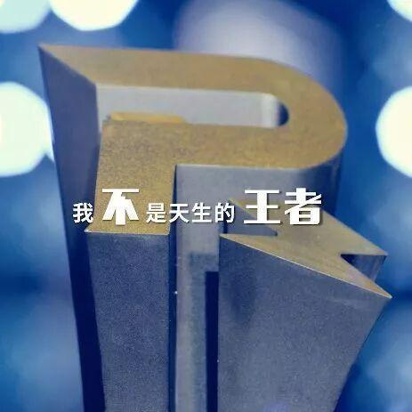
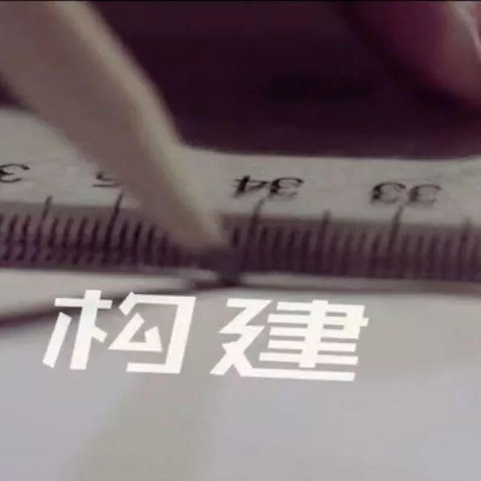
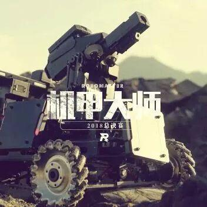
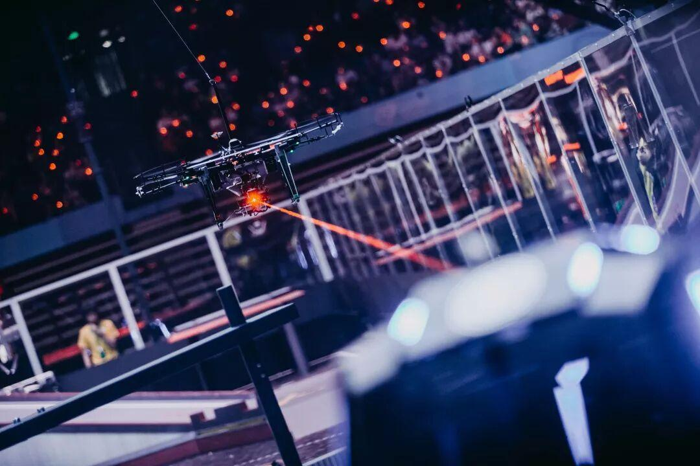
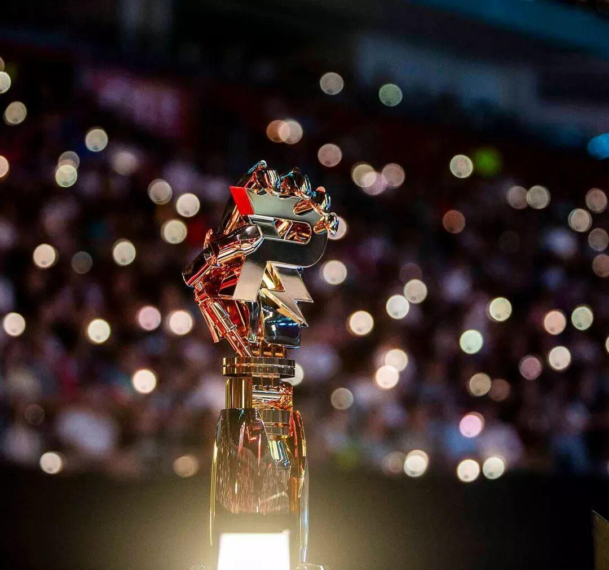
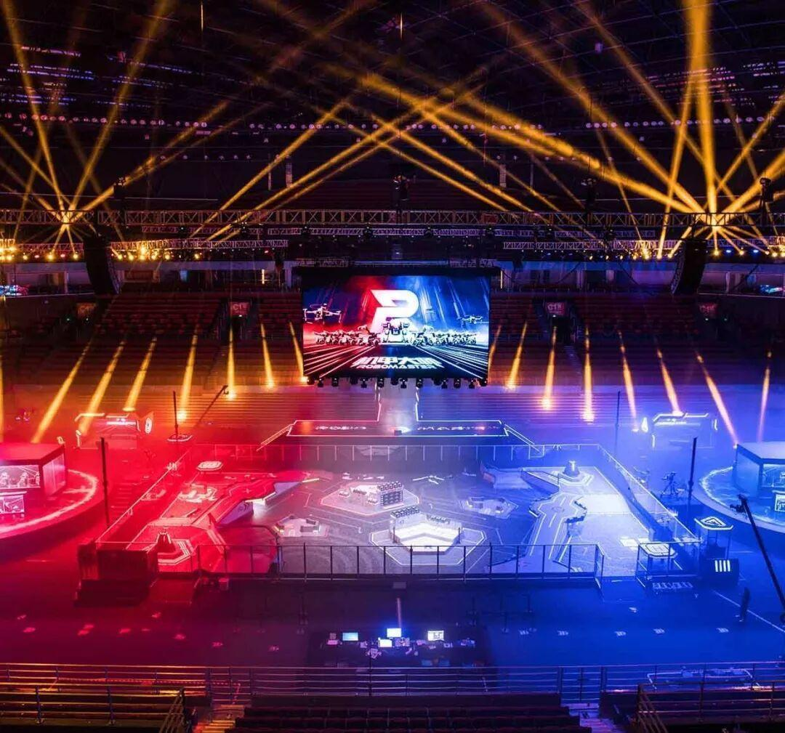

RM 2019，现在开始 ！
RM 2019 ,现在开始！
什么是机器人大赛？
RoboMaster机器人大赛，是一个为全世界青年工程师打造的机器人竞技平台。自办赛以来，始终坚持“让思维沸腾起来，让智慧行动起来”的宗旨，在推动广大高校学生参与科技创新实践、培养工程实践能力、提高团队协作水平、培育创新创业精神方面发挥了积极作用，为社会培养出众多爱创新、会动手、能协作、勇拼搏的科技精英人才。
比赛要求参赛队员走出课堂，组成机甲战队，独立研发制作多种机器人参与团队竞技。他们将通过大赛获得宝贵的实践技能和战略思维，将理论与实践相结合，在激烈的竞争中打造先进的智能机器人。
赛事发展
2013 DJI大疆创新创办首届大学生夏令营，营员仅24名，任务是基于机器视觉的自主机动打靶。 |  |
 | 2014 大学生夏令营增至100人，任务是基于往届的经验积累进行优化升级，开展4V4的机器人射击对抗，形成ROBOMASTER的竞赛规则雏形。 |
2015 DJI大疆创新携手团中央、全国学联、深圳市人民政府联合举办首届RoboMaster机甲大师赛，首创5V5的机器人射击对抗模式，吸引中国内地超过3000名大学生参赛。 |  |
 | 2016 为了提升技术质量和竞赛体验，RoboMaster组委会研发出新一代机器人裁判系统。第二届的RbboMaster机甲大师赛阵容更新为双方各有1个英雄机器人、3个步兵机器人、11个基地机器人、1个空中机器人进行射击对抗，同时在本届大赛期间也首次引入了来自海外及港澳台的高校机器人战队参赛。 |
2017 第三届的RoboMaster机甲大师赛阵容升级为7V7的机器人设计对抗，发展为一项对理工学科综合能力要求全面均衡的赛事。此外，RoboMaster增加挑战赛系列，与国际顶尖机器人学术会议IEEE在新加坡联合举办首届ICRA RoboMaster技术挑战赛。 |  |
 | 2018 发展到第四届的RoboMaster机甲大师赛新增了哨兵机器人、空中机器人装载发射机构等要求，专注于工程实践人才培养，吸引近200支全球队伍参赛。同年，DJI在澳大利亚举办第二届ICRA RoboMaster人工智能挑战赛，专注于机器人学术课题研究。。 |
比赛规则
RoboMaster机甲大师不仅仅是中国大学生的机器人比赛，未来也将发展成为世界范围内科技爱好者共同参与的机器人竞技项目。让机器人竞技和工程师们进入大众的视野，启发更多怀有科技梦想的个人或群体，参与到科技创新的潮流中。
RoboMaster正在为高校新型人才培养带来一场突破性革命，在促进机器人技术发展的同时，也为参赛队员搭建一个全面交流的平台，他们在比赛中成长，在实践中进步，朝着改变世界的梦想永不止步。


视频：RobotMaster 官网
文字：RobotMaster 官网
图片：网络
排版：王颢然